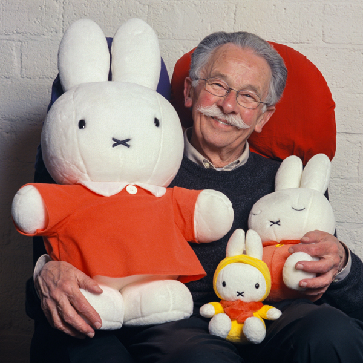

Miffy is Dick Bruna's best known and most popular character, featuring in more than 30 books, far more than any other character he created. Miffy appeals to children all over the world, instilling a sense of safety. Many children are able to identify with Miffy and her adventures. She is uncomplicated and innocent, has a positive attitude and is always open to new experiences.
Miffy was "born" in 1955. While on holiday in Egmond aan Zee, Dick Bruna would tell his eldest son, Sierk, bedtime stories about a little, white bunny, who scampered around the garden of their holiday home. This bunny became the inspiration for Miffy. Later, when Dick began sketching Miffy, he decided he would prefer to draw the bunny in a little dress, rather than a pair of trousers, and so Miffy became a little girl bunny. In the early years, Miffy looked a bit like a fluffy toy with floppy ears, but from 1963 onwards, when the books were first published in square format, she became the Miffy we know today, gazing confidently at the reader with her little, black eyes. She has two pointy ears and little chubby cheeks. In "miffy's dream" (1979) and all subsequent stories, her ears and face are slightly rounder and more balanced. After that, her body became somewhat rounder and softer. After "miffy in the tent" (1995), her appearance remained much the same until 2001, when the proportions of her head and body changed slightly in "miffy the ghost", making her look more like toddler. And after a new baby arrived in "miffy and the new baby" (2003), she became a big sister and looked like a real little girl bunny.
"According to Japanese and Chinese astrology, Dick Bruna was born in the year of the rabbit."
〰〰〰〰〰〰〰〰In the Netherlands, Miffy is known as "nijntje", which derives from the Dutch word "konijntje", meaning "little bunny". This is a very logical name for anyone who speaks Dutch, but not in any other language. Because "nijntje" is difficult to prounce for non-Dutch speakers and because there are so many different words for "bunny" in other languages, Dick Bruna's little bunny is simply known as Miffy. The name doesn't have any special meaning, but it is easy to pronounce in all languages. In the past, Miffy had a different name in every language. She was known as "le petit lapin" in French, for example, and as "kleintjie" in Afrikaans, but since 1996 she is known as Miffy everywhere outside the Netherlands.